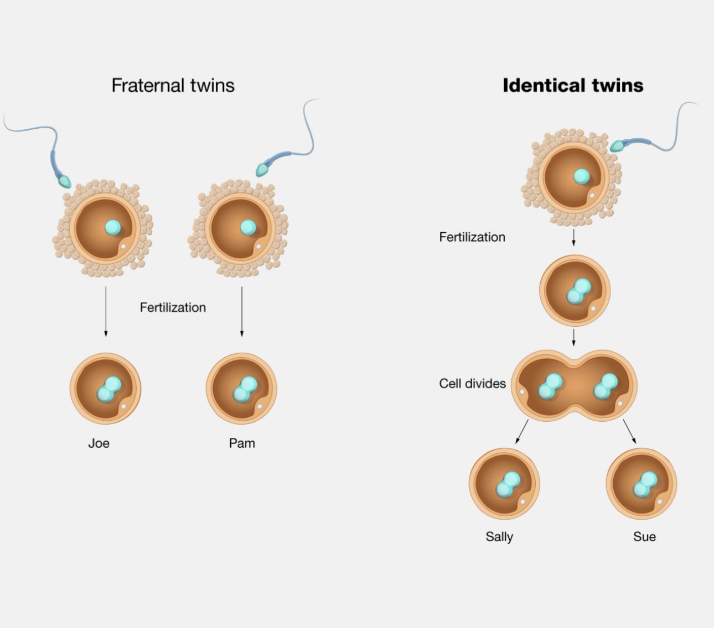

The difference Between Identical and Fraternal Twins
Identical twins (also called monozygotic twins) result from the fertilization of a single egg by a single sperm, with the fertilized egg then splitting into two. Identical twins share the same genomes and are always of the same sex. Fraternal twins (also called dizygotic twins) result from the fertilization of two separate eggs with two different sperm during the same pregnancy. Fraternal twins may not have the same sex or appearance. They share half their genomes, just like any other siblings.
Often, identical twins can be identified in the womb, as they often share a placenta. After birth, it can be deduced that twins are fraternal if they are of different genders (a boy and a girl) or if they have different blood types. However, the only way to reliably conclude that they are identical twins is through genetic testing (a twin zygosity DNA test).